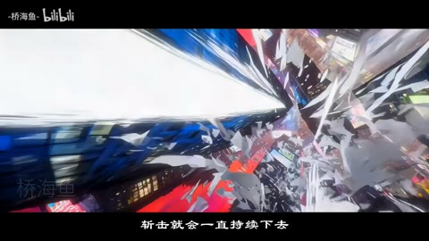
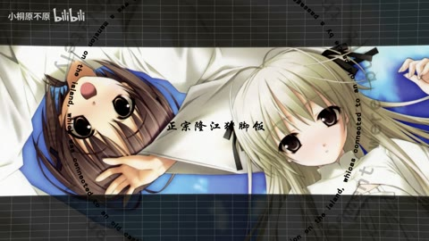
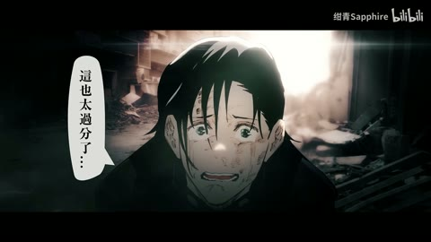
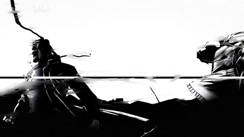

← 案例图谱AI42 / 主要视觉研究样本
〖新宿决战〗第二话 seedance 2.0 制作
-桥海鱼- · 111.2万播放快照 · ≥10万 · B站原作 ↗
城市翻转和白色斩击可在同镜内产生巨大变化。把空间运动、特效覆盖与真正换镜分开，是判断节奏的基础。

约55.000秒 · 案例代表帧从画面里找依据
这一例先看什么
红蓝城市、怪物寺庙、紫斜分屏与笔刷漩涡保持夸张漫画基调，开头复用上集需单列。
审美判断
黑球白径线、红刀痕和蓝边光人物对比明确，黑边对白维持安全区；漫画字、监看屏与主要人物的作用不同。
迁移到自己的题材
战斗、运动、竞速、预告、产品性能演示、情绪冲突的高潮。
教学提问：观众能指出谁在攻击、朝哪边、是否击中吗？哪些是原素材的动作，哪些才是新增剪接或合成？
带画面的分析单元
图像标出取样时间，对应观察中的关键状态。单帧不能独立证明运动，连续性请结合摘录。表达作用与应用场景是教学解读，复现路线是建议，不是原作者工程还原。
分析单元 01 / 0—35秒
接上集／球形黑域／白色径向爆光／漫画字
实际观察
开头复用第一话末段格斗手势，黑球罩城市，边缘红紫光带，白线向中心聚集；巨大双斩线穿球。
表达作用（教学解读）
让能量、方向或主次可见；清楚的字芯和主体轮廓应保留。
具体应用场景
战斗、魔法、科技、梦境、舞台、标题强调、人物焦点。
复现建议（非原作者工程还原）
圆形mask、噪声光边、径向线和十字路径可以合成；城市球体关系需源镜头。
直出判断：简化球域/放射线/漫画字容易；准确城市透视难
常见误用：只加大模糊半径；光源不影响周围环境；发光覆盖所有细节；把原片光效当新增。
分析单元 02 / 35—58秒
红色刀痕／面部伤口／旋转城市斩击
实际观察
人物挥手伴红色斜痕，伤口近景后是连续翻转城市与长条白色斩击，碎片沿视点飞过。
表达作用（教学解读）
用运动方向、尺度和密度建立空气、空间或情绪；装饰层应服务焦点。
具体应用场景
回忆、季节、梦幻、寒冷、散场、能量爆发、文本聚散。
复现建议（非原作者工程还原）
斜向路径与辉光、人物局部纹理；空间翻转需3D或生成，碎石遮挡另合成。
直出判断：斩击光条简版容易；多楼破坏/几何连续性难
常见误用：平均铺满；近远粒子大小与模糊无差别；粒子挡脸；用程序火星冒充纪实拍摄。
分析单元 03 / 58—80秒
监看室解释／漂浮红块／怪物寺庙
实际观察
对话室有红色方块浮动，插入带角、眼、牙的巨大庙宇，后回群像。
表达作用（教学解读）
通过变化与稳定的比例让信息有轻重。视觉密度来自切镜、版式与局部动画三个层面，不只靠刀数。
具体应用场景
所有形式；尤其高潮前的蓄力、解释段的阅读、回忆段的停留和快慢对照。
复现建议（非原作者工程还原）
生成场景与叙事剪接，简化方块粒子加景深可后制。
直出判断：方块/字幕/剪接容易；复杂寺庙美术难
常见误用：全片等密度；把闪帧当新镜；高切速被当成质量分；没有稳定段供观众理解。
分析单元 04 / 80—104秒
红黑冲击构图／紫色斜分屏／漫画屏幕
实际观察
战斗画面红黑夸张对比，紫光斜边切开两侧人物，随后监视屏展示黑白寺庙漫画。
表达作用（教学解读）
让多个时间、视角或人物关系同时出现；通过对位建立联系，而非只提高画面数量。
具体应用场景
记忆、对话、关系对照、主观视点、多人角色介绍、跨素材呼应。
复现建议（非原作者工程还原）
色彩分区、斜mask、光边和屏幕四角贴图；原生成场面单列。
直出判断：斜分屏/屏幕贴图/调色容易
常见误用：窗口太多无主次，眼位错位、边框挤脸，层的出现没有叙事理由。
分析单元 05 / 104—143秒
长对话／红蓝天幕／遮挡前景
实际观察
多角色近景与兜帽人物废墟镜头，红蓝流体般天幕与前景钢筋形成纵深。
表达作用（教学解读）
将平面关系变成有前后层次的观看空间；小幅运动可以放大情绪。
具体应用场景
静止画MAD、回忆、图像故事、海报动态化、人物介绍。
复现建议（非原作者工程还原）
人物镜头选取与背景生成，前景alpha、景深、红蓝噪声纹理可近似。
直出判断：简化色幕/前景遮挡容易；角色空间需素材
常见误用：所有层同速或反向乱动；人物像纸板；补洞不完整；视角变化超出原画信息。
分析单元 06 / 143—150秒
电视弯曲／水平故障／红蓝笔刷漩涡
实际观察
144.333附近画面缩成弧形屏并出现水平拖裂，144.733起红蓝黑笔刷漩涡覆盖，随后缩回城市远处，146附近接近身格斗。
表达作用（教学解读）
把短暂破坏作为失控、断裂、冲突或数字材质的提示。
具体应用场景
赛博题材、记忆中断、身份不稳、高潮强调；也可短时掩护连接。
复现建议（非原作者工程还原）
桶形位移、行偏移、噪声阈值、极坐标螺旋笔刷mask与缩放合成。
直出判断：电视弯曲/故障/漩涡简版可代码导出；精确笔触需素材和调色
常见误用：全程持续导致麻木；色散让脸和字长期看不清；把所有亮度变化算成切镜。
分析单元 07 / 150—214秒
人物反应／短黑场／白色气流／近身对打
实际观察
惊讶面部插镜、手势、黑场小字后再接战斗与对话；格斗动作周围有白色弧状气流。
表达作用（教学解读）
利用相邻镜头改变理解，使原来无关的画面形成主题、对比或关系。
具体应用场景
纪念、广告、人物关系重组、旅行随笔、社会观点、品牌回顾。
复现建议（非原作者工程还原）
主次镜头选取、字幕/黑场分节、曲线描边运动模糊，格斗需生成动作。
直出判断：气流/黑场/文字容易；动作接触与人体一致性难
常见误用：素材只因好看而排列；上下文失真；借剪接制造未经支持的事实判断。
分析单元 08 / 214—287.811秒
英文小字／拳脚对打／红光贯城／片尾
实际观察
蓝边光人物下方UR my special，打斗后白色冲击环，红光沿城市射出，末角色特写和未完待续。
表达作用（教学解读）
通过变化与稳定的比例让信息有轻重。视觉密度来自切镜、版式与局部动画三个层面，不只靠刀数。
具体应用场景
所有形式；尤其高潮前的蓄力、解释段的阅读、回忆段的停留和快慢对照。
复现建议（非原作者工程还原）
简单字层、径向冲击环、红光束与镜头选择，城市沿线飞行需源动画。
直出判断：字层/冲击环/红光容易；高速城市空间难
常见误用：全片等密度；把闪帧当新镜；高切速被当成质量分；没有稳定段供观众理解。
用连续画面核对
保留原研究的多段局部摘录。片段含音轨不代表已听审；本资料不评价音乐卡点或对白节奏。
短时变化怎样理解
54–56秒连续城市翻转0确认主切；143–147秒故障→笔刷漩涡→格斗至少2处，147秒对打隐藏接点无法可靠分离。
把镜头连接、版式更新、局部图层变化和镜内运动分开记录。所查窗口是下限，不是全片平均或AI／人工排名。
原始逐窗记录 →这次练习的约束
用三个动作片段组成8秒“准备—碰撞—结果”，先不用特效；再仅加一次光效和一次短停顿，检验是否更清楚。
先写“我希望观众明白／感到什么”，再选本页的一种手法。完成无效果基础版后再加层；解释新增层带来的收益和代价。
打开练习与复盘表 →来源、观看范围与制作归属
实际检查范围：实际查看58张5秒概览0–285（4表），54–55.933及147.2–149.133共60密集帧（4表）；143–146.933另60帧（15/s，4表）全看。源287.811秒1080p30fps，三段4秒摘录。未听审、未连续完整音画观看。
制作线索：-桥海鱼-，第一方111.2万，2026-02-19；作者声明AI合成、标题Seedance2.0，简介100H制作自述与二创说明。与第一话同作者同系列，不算独立作者样本。
边界：同作者前话及后续MV不是独立制作路径；画内转视角可能生成与剪接混合。故障/斜分屏可做，复杂城市旋转与人物互击需镜头素材。
播放快照保存时间（UTC）：2026-10-20T23:35:44.294473+00:00。H30制作方式为推定；同源改编、仿作和转载依原记录标注。
原始案例记录 · 选样表把你的判断留下来
笔记仅尝试保存在本机浏览器；浏览器策略可能限制本地文件存储，重要内容请导出。
沿着同一问题继续阅读

H35漫画、纸张与记忆
临摹教材的用途是理解规则再做变体。先指出借用了什么，再检查自己更换内容后是否仍讲得清楚。
机制／局限参考9个分析单元

H08漫画、纸张与记忆
漫画着色、浅景深、城市叠层、废墟人物与暗字森林提供空间/材质变化，原动画与静止画混用需分层归属。
主要样本8个分析单元

H05漫画、纸张与记忆
黑白漫画、红黑冲击、山景云海和白场尾声有疏密反差，人物尺度变化和墨迹/条带组织前后层次。
主要样本9个分析单元